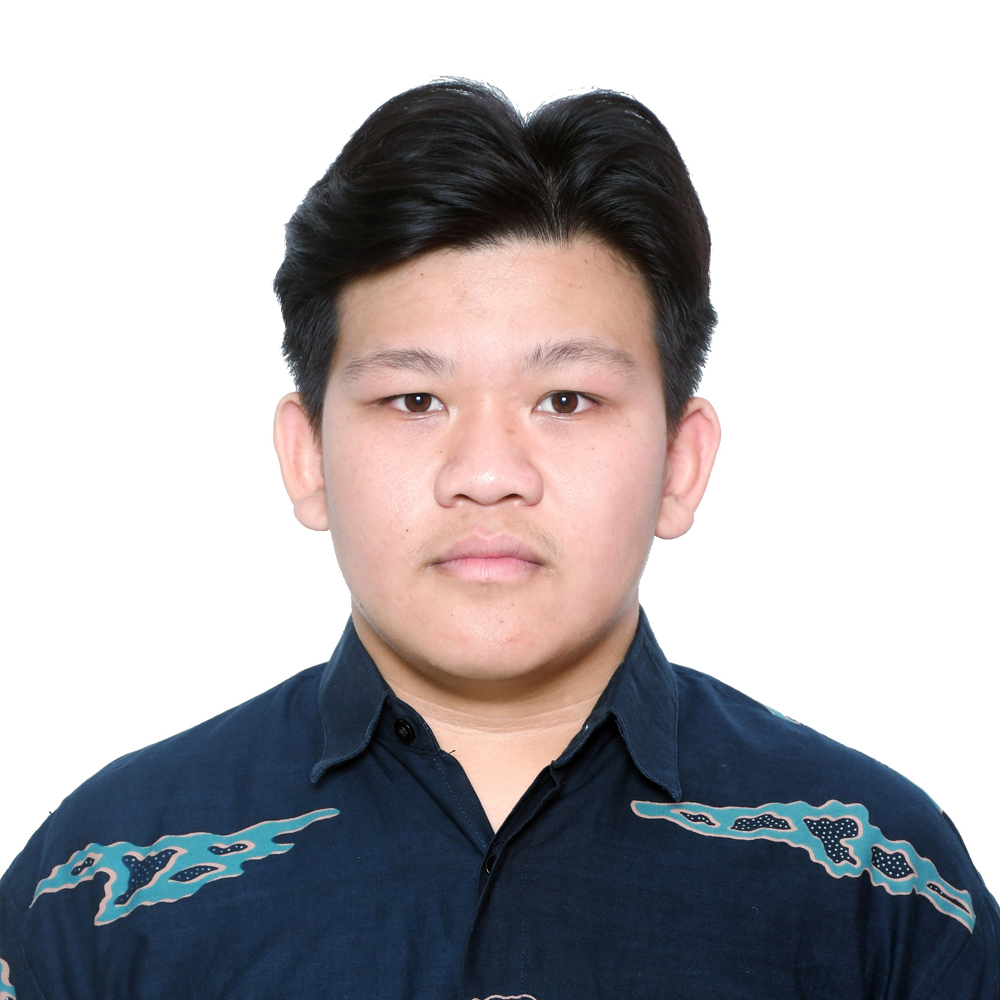
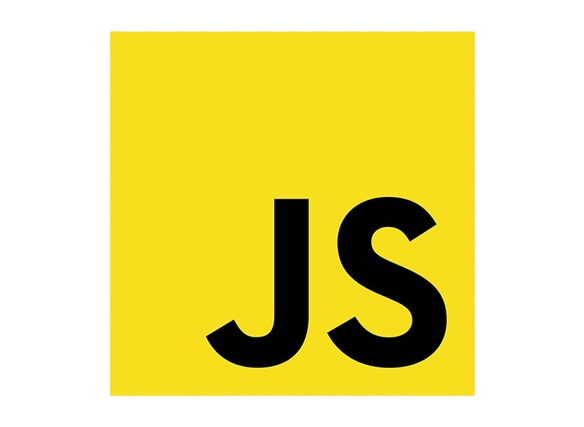

Reinaldo Alvin Santoso
Junior Web Developer
Tentang Saya
Halo! Saya Reinaldo Alvin Santoso, seorang Web Developer yang memiliki keahlian dalam HTML, CSS, JavaScript, PHP, dan SQL. Saya berpengalaman dalam membangun website yang modern, responsif, dan fungsional dengan fokus pada kualitas kode dan pengalaman pengguna. Saya juga memiliki pemahaman dasar dalam pengembangan backend dan database, yang memungkinkan saya untuk membuat aplikasi web yang terintegrasi dan efisien. Saya sekarang sedang mempelajari Laravel untuk menambah keahlian saya dan tetap mengikuti perkembangan teknologi. Saya selalu bersemangat untuk mengembangkan kemampuan saya dan mengikuti perkembangan teknologi terbaru di dunia web development.
Pendidikan
Keahlian
HTML

CSS

JavaScript

PHP

SQL
Proyek

Website Sistem Kasir
Sistem kasir yang dirancang untuk menghitung total produk, penjualan, dan pendapatan UMKM dengan fitur stok dan laporan periode.

Puzzle Game Coding
Game yang dirancang untuk mempelajari bahasa Python dengan beberapa level.

Sertifikat & Pengalaman

Panitia Acara Kosayu Artfest
SMAK Kolese Santo Yusup Malang • 2025
Berpartisipasi dalam seksi Website Ticketing dengan merancang desain situs web.